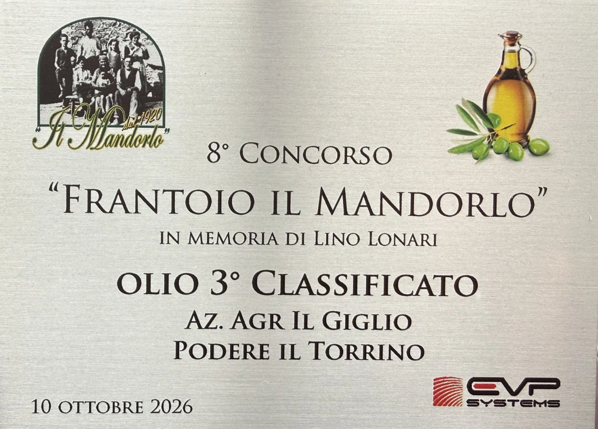
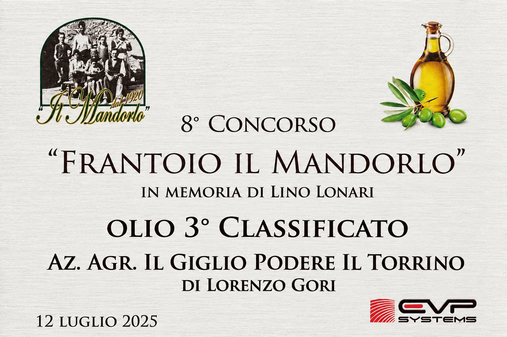
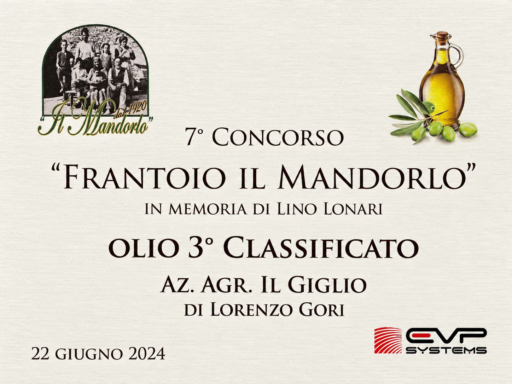
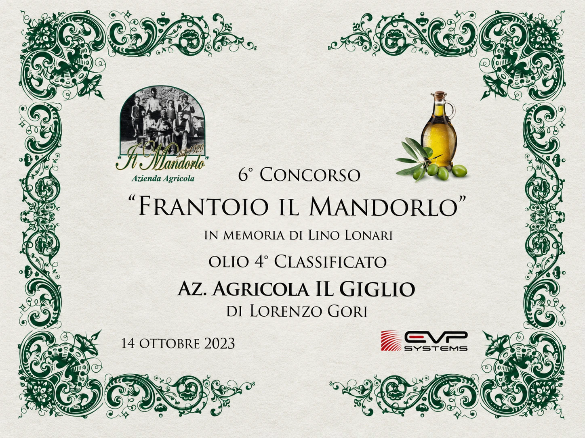
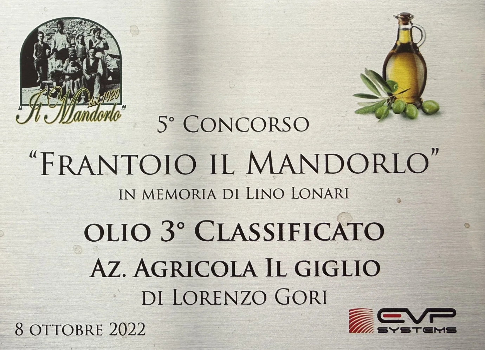
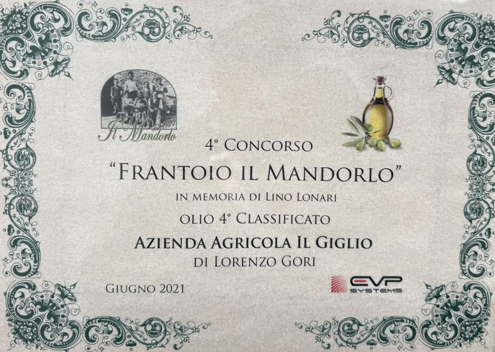

"Questo olio extravergine di oliva proviene interamente dalle nostre olive coltivate nella Tenuta di Marignolle, sulle colline di Firenze."
Dal 1986, Lorenzo Gori infonde una dedizione incrollabile in ogni istante della produzione: è presente personalmente in ogni gesto, dalla potatura manuale delle piante alla cura del terreno, dalla scelta dell'istante esatto di raccolta fino alla frangitura e al meticoloso imbottigliamento all'origine.
CONCORSO FRANTOIO IL MANDORLO
Sei anni di riconoscimenti per l’olio Il Giglio. Tutti i certificati, dal più recente.





